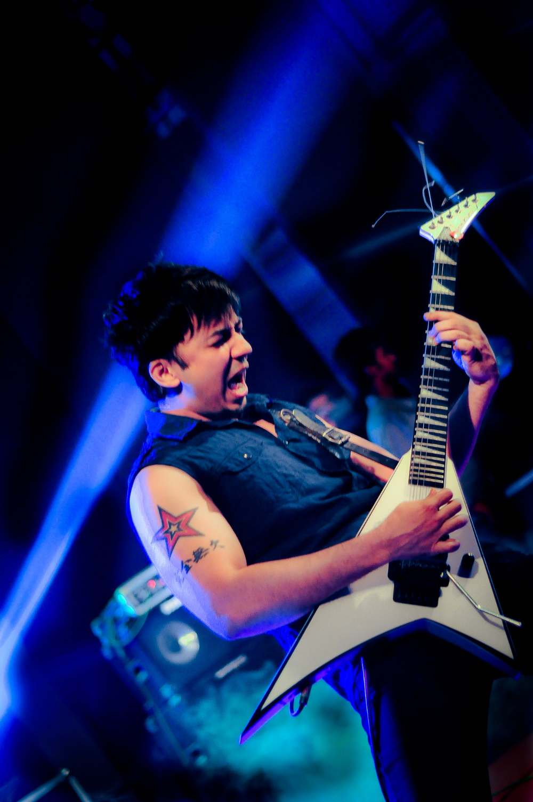
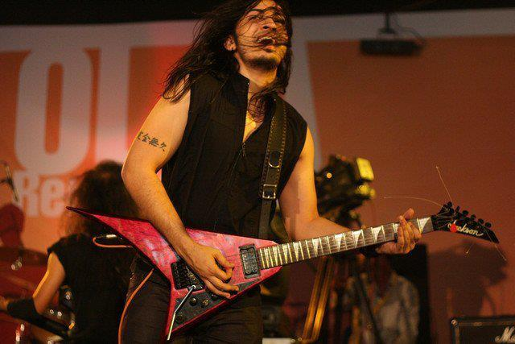
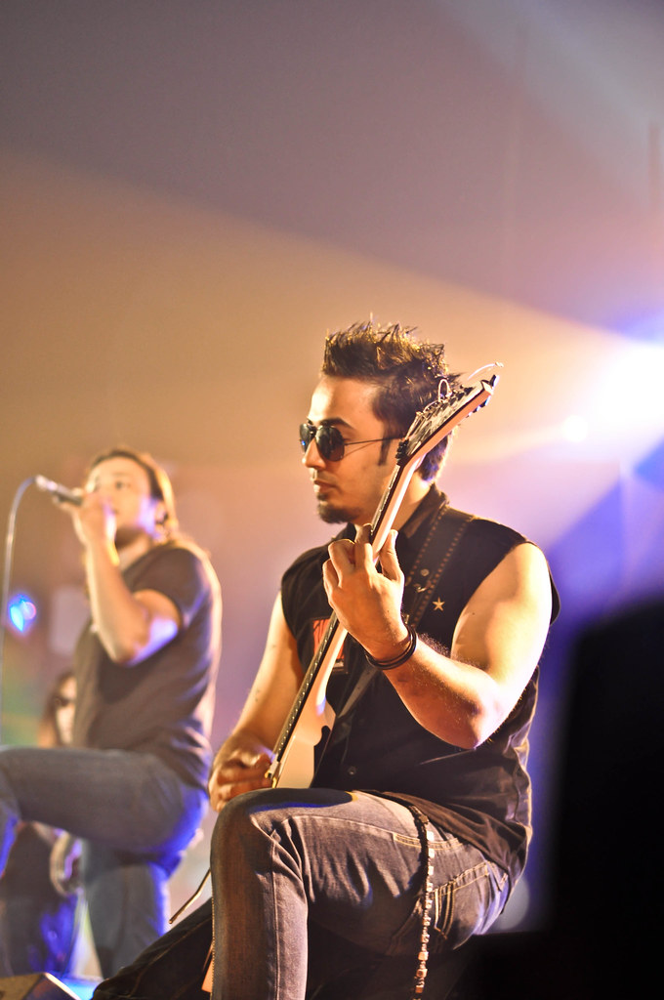

INTRODUCTION
Oni Hasan (born 1 August 1985) is a renowned celebrity, guitarist and composer from Dhaka, Bangladesh. He is best known as the lead guitarist and composer of the Bangladeshi heavy metal-hard rock band Warfaze from late 2006 to January 2015. Oni Hasan was also the lead guitarist-composer of a Bangladeshi heavy metal band named "Vibe" during the initial days of his career. Oni Hasan was a member of Bangladeshi metal band Warfaze which also featured the vocal talent of Mizan Rahman along with Sheikh Monirul Alam Tipu (drums and percussion), Shams Mansoor Ghani (keys), Naim Haque Roger (bass), as well as legendary guitarist Ibrahim Ahmad Kamal (guitar).
Early Life
Oni Hasan's birth name(full name) is Saleh Hasan Oni. He was born in Faridpur. He is of Bangladeshi descent and comes from a family of greater Comilla district, where musicians like Ustad Allauddin Khan, S.D. Burman, and R.D Burman have grown up. He is the eldest child of the family, with two younger brothers, Sunny and Sayem Hasan. His father Mr. Kamrul Hasan is a textile engineer and his mother Ruma Hasan is a home maker. His father played classical instruments, and the two younger brothers are guitarists as well.
Associated Bands
Oni has been associated with two bands only till now.
- Vibe (2005-2007)
- Warfaze (2007-Present)
-

Oni performing solo of 'Shrine' (2015)
-

Oni during a concert with 'Warfaze'
-

Oni performing in Stage
Discography
Here is the list of all of Oni Hasan's work till date-
| Band Name | Album/Song Name | Release Year |
|---|---|---|
| Vibe | Chena Jagot | 2007 |
| Underground 2 | 2007 | |
| Warfaze | Pothchola | 2008 |
| Shomorpon | 2011 | |
| Shotto | 2012 | |
| Instrumental Solo | Shrine | 2015 |
| Wild Aurora | 2016 | |
| Shrine Revisited | 2020 |
Personal Life
Oni spends most of his time practising, learning and teaching the guitar. Apart from this, he is very health conscious, goes to the gym everyday and he does not drink nor smoke. He has got two tattoos on his right arm, a star which is his favourite symbol and "absolute perfection" written in Japanese under it. He believes everything he does, be it music or personal life related, should be done with so much dedication that it is turns out to be absolutely perfect.
In 2011, he had to leave the country for his higher education in UK, at Keele University to study Marketing and Music Technology. He came back in March 2012, taking a leave from the University to record the 8th Warfaze album. Warfaze's 8th Album got released in Oct 2012 with 8 brand new tracks and one unreleased track. He has two compositions of his own in the album: Naa and Purnota. Both the tracks were big hits.
Currently, He lives in China with his Girlfriend Cui Lily.
Equipment
Oni has used a varity of equipment in his career. Some of them are listed below :-
-
Guitars
- Jackson RR24
- Jackson RR3 Pro
- Jackson Matt Tuck Signature Rhoads
- Kiesel (Currently using)
-
Amplifiers
- Marshall JVM
-
Effects
- Boss Acoustic Simulator
- Boss Noise Suppressor NS2
- Boss Compressor Sustainer CS3
- Electro Harmonix Metal Muff
- Boss EQ GE 7
- Boss Digital Delay DD7
- Line 6 products
-
Accessories
- Jazz 3 Guitar Picks